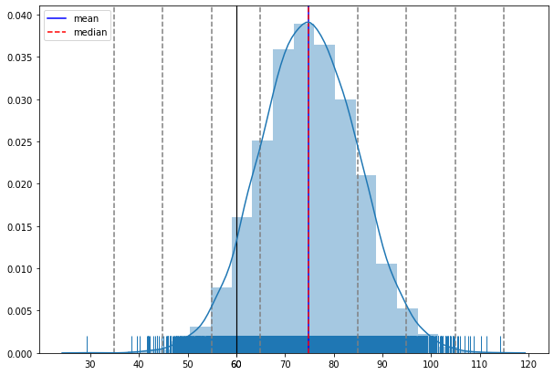
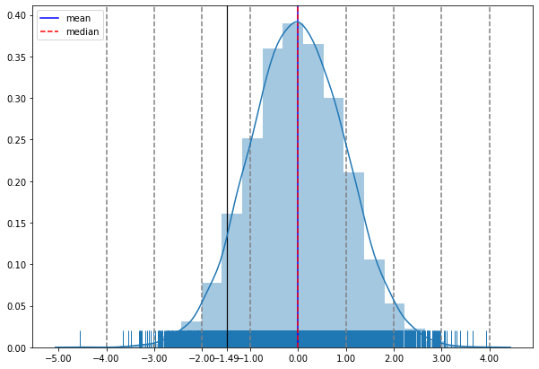

Z Score¶
[1]:
import numpy as np
import pandas as pd
import matplotlib.pyplot as plt
import seaborn as sns
[39]:
mu = 75
sigma = 10
bell_curve_data = np.random.normal(loc=mu,scale=sigma,size=(10000,))
def plot_distribution(data,observe_data=None):
fig = plt.figure(figsize=(10,7))
ax = fig.add_subplot(1,1,1)
mean = np.mean(data)
median = np.median(data)
std_dev = np.std(data)
for i in range(1,5):
ax.axvline(mean + i * std_dev,c='grey',ls="--")
ax.axvline(mean - i * std_dev,c='grey',ls="--")
if observe_data is not None:
ax.axvline(observe_data,c='black',lw=1.2,fillstyle='left')
x_ticks = np.append(ax.get_xticks(), observe_data)
ax.set_xticks(x_ticks)
ax.axvline(mean,label="mean",c='b')
ax.axvline(median,label="median",c="r",ls="--")
sns.distplot(data,bins=20,rug=True,norm_hist=True)
ax.legend()
fig.show()
def plot_std_norm_distribution(data,observe_data=None):
fig = plt.figure(figsize=(10,7))
ax = fig.add_subplot(1,1,1)
mean = np.mean(data)
median = np.median(data)
std_dev = np.std(data)
data = (data - mean) / std_dev
for i in range(1,5):
ax.axvline(i,c='grey',ls="--")
ax.axvline(-i,c='grey',ls="--")
if observe_data is not None:
observe_data = (observe_data - mean) / std_dev
ax.axvline(observe_data,c='black',lw=1.2,fillstyle='left')
x_ticks = np.append(ax.get_xticks(), observe_data)
ax.set_xticks(x_ticks)
median = (median - mean) / std_dev
mean = 0
ax.axvline(mean,label="mean",c='b')
ax.axvline(median,label="median",c="r",ls="--")
sns.distplot(data,bins=20,rug=True,norm_hist=True)
ax.legend()
fig.show()
plot_distribution(bell_curve_data,60)
plot_std_norm_distribution(bell_curve_data,60)
<ipython-input-39-beb4909b05f3>:28: UserWarning: Matplotlib is currently using module://ipykernel.pylab.backend_inline, which is a non-GUI backend, so cannot show the figure.
fig.show()
<ipython-input-39-beb4909b05f3>:60: UserWarning: Matplotlib is currently using module://ipykernel.pylab.backend_inline, which is a non-GUI backend, so cannot show the figure.
fig.show()


in the curve above i can see. i need to find z-score(area under the curve from left side only) for -1.49.
so lets look at the z score table

Z score table¶


we need negative 1.49
so from top to bottom i’ll select -1.4
and from left to right i’ll select 0.09
i get 0.06811
[ ]: